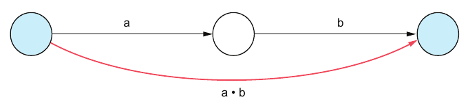
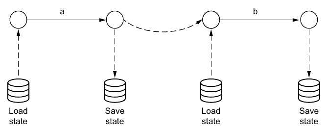

Chapter 11 · pp. 145–155
Durable executions
Think Distributed Systems, 1st Edition
Durable executions are to distributed systems what transactions are to databases: an abstraction that hides the possibility of failure (p. 145). The problem is partial execution. A signup function that charges a card and then creates an account can crash in between, leaving the user charged and locked out, because failure atomicity doesn't compose: a sequence of two atomic actions isn't atomic (pp. 145–148).
The chapter separates definitions (failure-aware or failure-agnostic) from executions (failure-free, failure-tolerant or failure-transparent) (p. 147). It models processes as sequences of atomic steps and executions as traces that may crash (p. 148). It defines failure-transparent recovery relative to an application-chosen equivalence function: identity, duplicating the last event, duplicating the last n events, or a full restart (pp. 149–150). It compares restart and resume (pp. 150–151), then two implementations:
- Sagas, at the application level: failure-aware state machines (pp. 152–153).
- Durable execution, at the platform level: failure-agnostic code run by a runtime that either replays a log of step results or restores a saved continuation (pp. 153–155).
The chapter’s own outline (from the book’s table of contents)
- 11.1 The pitfalls of partial executions — p. 145
- 11.2 System model — p. 147
- 11.2.1 Process definition — p. 148
- 11.2.2 Process execution — p. 148
- 11.3 The concept of failure-transparent recovery — p. 149
- 11.4 Strategies of failure-transparent recovery — p. 150
- 11.4.1 Restart — p. 150
- 11.4.2 Resume — p. 151
- 11.5 Implementation of failure-transparent recovery — p. 152
- 11.5.1 Application-level implementation: Sagas — p. 152
- 11.5.2 Platform-level implementation: Durable execution — p. 153
From the book
11.1 The pitfalls of partial executions
The chapter opens with an epigraph from "An Equational Theory for Transactions" (Black, Cremet, Guerraoui and Odersky): under partial failure, even basic rules of reasoning about computation fail (p. 145).
The example is a streaming platform's signup (Listing 11.1): await Payment.create(…), then await Account.create(…). It handles only the happy path. A crash between the two calls charges the user without granting access (pp. 145–146).
| Notation | Meaning (p. 146) |
|---|---|
| a, b | Two atomic actions |
| a•b | Their sequential composition, which is not atomic (Figure 11.1) |
| t \| ⚡ ≡ prefix t | What we get: a crash leaves some prefix of the execution |
| t \| ⚡ ≡ t or nothing | What we want: failure transparency |


Aha! moment, two flavors of atomicity (pp. 146–147):
| Flavor | Observably equivalent to… | Intermediate states visible to others? |
|---|---|---|
| Concurrency atomicity | Running uninterrupted (databases call this isolation) | No |
| Failure atomicity | All or nothing | Yes |
The chapter uses atomic to mean failure-atomic. A process moves from a correct state through an incorrect intermediate state (charged, no account) to a correct one. Failure atomicity guarantees the process never stops in that middle state (p. 147).
From the book
11.2 System model
The section opens with a Dijkstra epigraph: the programmer's real subject is the execution their definition controls (p. 147). We often blur definition (the code) and execution (the running code); Figure 11.2 separates them (p. 147):
| Definition (static, development) | Execution (dynamic, operations) | |
|---|---|---|
| Terms | Failure-aware, failure-agnostic | Failure-free, failure-tolerant, failure-transparent |
11.2 System model
11.2.1–11.2.2 Process definition and execution
p. 148- Definition: P = A • P′ | ε. Either perform the atomic action A and then behave like P′, or terminate successfully (ε).
- Execution: a trace t in which each step A is an observable event a. The model assumes Crash-Stop failures. For P = A • B • ε, the possible traces are × (crashed before a), a • × (crashed after a) and a • b • ✓ (success).
- A single-step process inherits its step's failure atomicity (Figure 11.3). A multi-step process doesn't: failure atomicity doesn't compose (Figure 11.4).
Aha! moment (p. 149): in "Sagas", Garcia-Molina and Salem define short-running (short-lived) as one step and long-running (long-lived) as several. This is about logical time, delineated by steps, not physical time.
From the book
11.3 The concept of failure-transparent recovery
Recovery is failure-transparent if a failure-free execution produces a sequence of events equivalent to that of a failed, recovered and continued execution. Transient and intermittent failures can't prevent completion; permanent failures can (p. 149). The chapter covers only forward recovery; compensation is in Chapter 3 (p. 149).
Equivalence is decided by an application-specific equivalence function (p. 149). For alphabet(), which prints a to f, one letter per step (Listing 11.2), P = A•B•C•D•E•F•ε and the failure-free trace is a•b•c•d•e•f•✓ (pp. 149–150). With a crash 💥 after c:
| Equivalence function | Recovered trace (p. 150) | Note |
|---|---|---|
| Identity | a•b•c💥d•e•f•✓ | Ideal, but amounts to exactly-once processing, which isn't always achievable |
| Valid to duplicate the last event | a•b•c💥c•d•e•f•✓ | Apt and popular |
| Valid to duplicate the last n events | a•b•c💥b•c•d•e•f•✓ | Here n = 2 |
| Restart (the extreme case) | a•b•c💥a•b•c•d•e•f•✓ | Duplicates everything done so far |
Vault note: the book's text refers back to "chapter 6" for exactly-once processing and idempotence (pp. 150–151); both are covered in Chapter 4.
From the book
11.4 Strategies of failure-transparent recovery
Duplicated events are only correct if actions are idempotent (p. 150).
| Strategy | How | Limits (pp. 150–151) |
|---|---|---|
| Restart | Run the process again from the beginning | Simple if steps are idempotent. Breaks delays: in Listing 11.4, the account is created and payment is collected after a one-week setTimeout, so a restart resets the week. Breaks nondeterministic steps: the time of day or a random number may differ on rerun |
| Resume | Restart from the most recent save point: load state, run a step, save state (Figure 11.5) | Needs enough information captured between steps |


From the book
11.5 Implementation of failure-transparent recovery
flowchart TB
subgraph PL["Platform level: failure handling contained"]
DE["Durable execution:<br/>failure-agnostic definitions"]
end
subgraph AL["Application level"]
SG["Sagas:<br/>failure-aware definitions"]
end
O[failure origin] -- escalation --> AL
AL -- escalation --> PLA simplified reading of Figure 11.6, the failure-handling ladder (p. 152): failure-aware levels handle failures explicitly; failure-oblivious levels above a containment point never see them.
11.5 Implementation of failure-transparent recovery
11.5.1 Application-level implementation: Sagas
pp. 152–153Sagas are failure-aware definitions that yield failure-transparent executions. A common implementation is a state machine whose state and next-step trigger are persisted after every step, enabling eventual execution (Listing 11.5):
- state
createAccountrunsAccountCreate()and returns{label: 'createPayment', account}; - state
createPaymentrunsPaymentCreate()and returns{label: 'done', payment}.
In the author's opinion this obscures the core business logic, making it harder to understand and maintain (p. 153).
11.5 Implementation of failure-transparent recovery
11.5.2 Platform-level implementation: Durable execution
pp. 153–155Durable executions are failure-agnostic definitions that yield failure-transparent executions. In Listing 11.6, signup is a generator (a coroutine) that yields each step as a function, and a runtime executes them. There are two strategies:
| Log-based (Listing 11.7) | State-based (Listing 11.8) | |
|---|---|---|
| Records after each step | The step's output, in a durable log | The execution's state, more precisely its continuation |
| On recovery | Restart the coroutine and replay: for each step already in the log, feed the logged result back instead of executing, fast-forwarding to the failure point | Load the saved continuation and continue, without replay |
| Requires | Deterministic execution, so replay follows the same path as the log | Serializable continuations, a language or runtime feature |
| Drawback | The log grows with every step | Most runtimes lack it today; early examples are Grain and Unison |
| Support needed | None special: simple to implement | Native support, a compiler extension or libraries |
(pp. 153–155)
Try it
Restart, resume and replay
Open full screen ↗ · the simulation is the vault’s own model of the mechanism the book describes.
Recap
Trade-offs at a glance
| Approach | Definition stays… | Recovery cost | Requires | Breaks on |
|---|---|---|---|---|
| Naive code (Listing 11.1) | Failure-agnostic | — | — | Any crash between steps: partial execution |
| Restart | Failure-agnostic | Re-run every step | Idempotent steps | Delays, nondeterminism |
| Resume from save points | Failure-aware (save and load) | Re-run the last step | Captured state | Forgetting to save |
| Saga (state machine) | Failure-aware | Re-run the current state's step | Persisted state, idempotent steps | Readability |
| Durable execution, log-based | Failure-agnostic | Replay the log, run the rest | Determinism | Nondeterministic code; very long logs |
| Durable execution, state-based | Failure-agnostic | None: continue | Serializable continuations | Runtimes without support |
Recap
Key takeaways
- Failure atomicity doesn't compose: t | ⚡ ≡ a prefix of t. The goal is t | ⚡ ≡ t, or nothing (p. 146).
- Two flavors of atomicity. Concurrency atomicity: observably equivalent to uninterrupted, with intermediate states hidden (databases call this isolation). Failure atomicity: all or nothing, but intermediate states may be visible. Failure atomicity is what correctness usually requires (pp. 146–147).
- Definition vs. execution. Failure-aware and failure-agnostic describe code; failure-free, failure-tolerant and failure-transparent describe running code (p. 147).
- Short-running vs. long-running (from the Sagas paper) is about logical time: one step versus several, not seconds versus days (p. 149).
- Failure-transparent recovery: a failed, recovered and continued execution is equivalent to a failure-free one. Transient and intermittent failures can't stop it from completing; permanent failures can (p. 149).
- Equivalence is chosen by the application. Identity amounts to exactly-once processing, which isn't always achievable, so practical choices allow duplicating the last event or the last n events, up to a full restart. Duplicates require idempotent steps (pp. 149–150).
- Restart is simple but breaks delays (it resets a one-week timer) and nondeterminism (the time, random numbers). Resume continues from the last save point (pp. 150–151).
- Sagas make the code failure-aware and obscure the business logic. Log-based durable execution needs determinism and a growing log. State-based durable execution needs serializable continuations, which few runtimes support (pp. 152–155).
Practice
Check yourself
Questions and answers are the vault's, written from the notes above; answers cite the book's pages.
1What goes wrong with Listing 11.1, and what general principle does it show?Show answer
A crash after charging and before creating the account leaves the user charged without access. The sequential composition of atomic actions isn't atomic: failure atomicity doesn't compose (pp. 146–148).
2Which terms describe definitions, and which describe executions?Show answer
Definitions: failure-aware, failure-agnostic. Executions: failure-free, failure-tolerant, failure-transparent (p. 147).
3What does "long-running" mean in the Sagas sense?Show answer
An execution with more than one step. It's a statement about logical time, not physical duration (p. 149).
5Name two situations where restart is the wrong recovery strategy.Show answer
A delayed step (restarting resets the one-week delay before payment) and nondeterministic steps such as reading the time or generating random numbers (p. 151).
6Why does the author prefer durable execution to sagas?Show answer
Sagas make the definition failure-aware, which obscures the business logic. Durable executions keep the code failure-agnostic (pp. 152–153).
7What does each durable-execution strategy require?Show answer
Log-based needs deterministic execution, and its log keeps growing. State-based needs serializable continuations, which most runtimes don't yet provide (pp. 154–155).
Supplement
Beyond the book
Vault supplement — not from the book.
- Workflow engines in practice. Temporal, Restate, AWS Step Functions and Azure Durable Functions are durable-execution platforms. Temporal and Durable Functions are log-based: they replay workflow code against an event history, which is why their workflow code must be deterministic and why they provide APIs for time, randomness and side effects that record their results. This is the vault's context; the chapter names no products besides Grain and Unison.
- Sagas with compensation. The original Sagas paper pairs each step with a compensating action for backward recovery, the "correct but less desirable" outcome of Chapter 3. The book's chapter only covers forward recovery (p. 149).
- Replay with a test. The durable-execution lab implements Listing 11.7's log-based runtime with Python generators, injects a crash after every step and checks that each recovered execution matches the failure-free trace under the "duplicate the last event" equivalence. It also shows that a nondeterministic step breaks replay.
Next steps
Keep going
Run it
How does log-based durable execution recover a process, and what breaks it? The script implements a tiny runtime. A process is a generator that yields steps; the runtime runs each step, records its result in a durable log, and sends the result back into the generator. After a crash, it starts the generator again and replays: steps already in the log are not re-executed, and their logged results are fed back instead. The book's alphabet() process is crashed after every step, just before the step's result is logged. The run is repeated with a version that branches on the clock outside a step.
cd books/think-distributed-systems/lab/11-durable-replay
python3 durable_replay.pyConnections
- Related chapters: 3. Failure tolerance (total vs. partial application, forward vs. backward recovery), 4. Message delivery and processing (exactly-once semantics and idempotence), 5. Transactions (the abstraction durable executions imitate), 6. Distributed transactions (atomicity across systems with 2PC instead), 8. Replication (state-based vs. log-based, again).
- Run it: Log-based durable execution — a generator-based runtime with a durable log; crashes after every step, recovers by replay, and compares traces with and without a nondeterministic step.